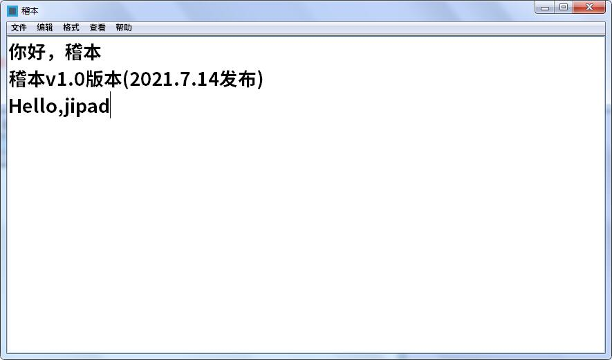
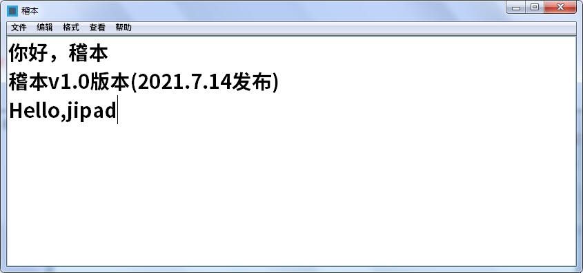
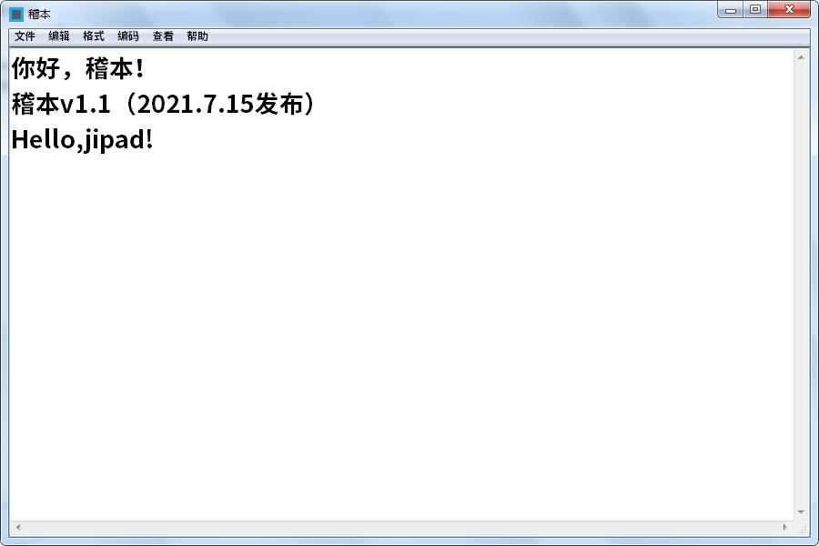
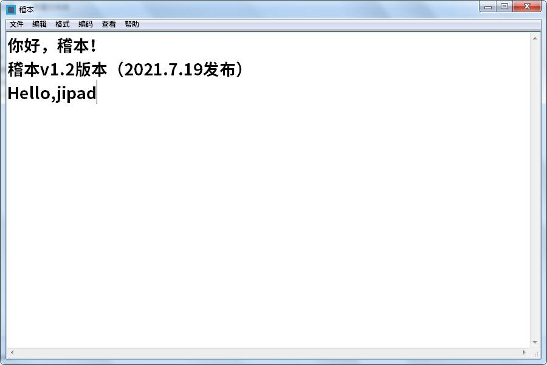
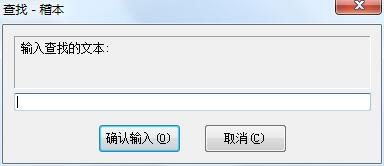
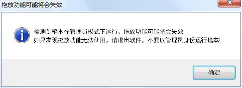

稽本
最新版！ 稽本的Github仓库 稽本最新版仓库 稽本最新版下载！
反馈 关于By:笔稽菌 特别感谢:电脑菌
- 2021.7.14:发布v1.0版本：（有BUG，比如窗口打开一次比一次小，这是因为稽本只保存了取用户长宽的大小）

稽本V1.0：发生BUG时

- 2021.7.15:发布v1.1版本

- 2021.7.24:发布v1.2版本

- 2021.7.30:发布v1.3版本(又紧急更新了一次，感谢@电脑菌(https://github.com/dnyyfb)发现了在删除稽本检测管理员测试文件的BUG)：
增加寻找文本的功能 （感谢@电脑菌(https://github.com/dnyyfb)提供的代码）

(注:截图来自稽本V1.4a版本)
能在“其他”菜单中快速嵌入网页和B站视频 （输入视频BV号）
能在“其他”菜单中快速调试HTML网页 （快捷键:Ctrl+F5）
稽本退出后会自动删除缓存文件夹
增加关于拖拽功能的提醒，说一句，不要用管理员身份运行稽本！会用不了拖拽的！
(当然Ghost系统用户没事)
emm，虽然我和电脑菌给稽本做了非常多的改变，但是编码部分还是没搞好
(在“帮助”菜单有个新的项目，大家可以看看（doge））
- 2021.8.3:发布v1.4版本
增加更新功能，可以在“帮助”选项卡内手动更新
新加了一些提示（错误）
增加一些提示弹窗的图标（“关于”弹窗不变）
- 2021.8.4:发布v1.4a(v1.41)版本
改正“更新“弹窗显示更新信息时乱码的BUG

- 2021.8.5:发布v1.5版本
修复编码的BUG（复杂文件还是有BUG）
增加Shift-Jis编码
- 2021.8.5:发布v1.5a版本
改了一点小细节

- 2021.8.5:发布v1.6版本
去掉了管理员判定
“Markdown快捷部分”有调整
稽本可以保存在不同编码下的文件了！
（不过复杂文件在编码转换下还是会有BUG的）
“更新”换源了，稽本的更新版本检测文件不会是hsz75.github.io/jipad/update/version.txt了
以后改成hsz75.github.io/jipad/version.txt了
源码的某些部分有些改变
一些小细节也有些改变
这可能是稽本的最后一个版本了
- 2021.8.7:jipad仓库更新
整理稽本文件
未完待续......